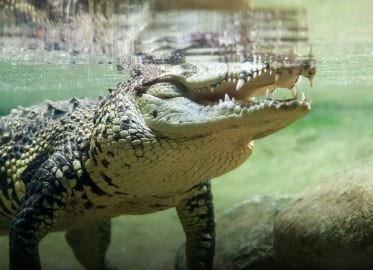

<!DOCTYPE html>
<html lang="en">
<head>
    <meta charset="UTF-8">
    <meta name="viewport" content="width=device-width, initial-scale=1.0">
    <title>Document</title>
</html>
<style>
    ul{
        list-style-type: none;
        padding: 15px;
        margin: 0px;
        background-color: black;
        overflow: hidden;
        
    }
    a{
        color: antiquewhite;
        width: 150px;
        font-size: 25px;
        font-weight: bold;
        text-decoration: none;
        padding: 10px;
        display: block;
        text-align: center;
        border-right: 2px dashed;

    }
    a:hover{
        background-color: navy;
    }
    li{
        float: left;
    }
    h1{
        color: antiquewhite;
        text-align: center;
        font-size: 75px;
    }
    body{
        background-color: black;
    }
    h2{
        color: white;
        text-align: center;
        font-size: 40px;
    }
    p{
        font-size: 25px;
        text-align: center;
    }
    a {
  text-decoration: none;
  display: inline-block;
  padding: 8px 16px;
}

a:hover {
  background-color: #ddd;
  color: black;
}

.previous {
  background-color: #f1f1f1;
  color: black;
}

.next {
  background-color: #04AA6D;
  color: white;
}

.round {
  border-radius: 50%;
}
</style>
<body>
    <header>
        <ul>
           <li> <a href="Home Page.html" target="_blank">Home</a> </li>
    <li> <a href="Visit Us.html" target="_blank"> Visit us </a> </li>
   <li>  <a href="Explore Aqua.html" target="_blank">Explore Aqua </a> </li>
   <li><a href="Experiences.html" target="_blank">Experiences</a> </li>
    <li> <a href="Education.html" target="_blank">Education</a> </li>
   <li> <a href="Aqua Mall.html" target="_blank">Aqua Mall</a> </li>       
        </ul>
    </header>
        <h1> Animal Encounters</h1>
        <br>
        <h2>
           "kING CROC ENCOUNTER"
        </h2>
        <h2>
            Have you ever been face-to-face with croc-royalty? Now it is your chance… Meet ‘King Croc’!
            <BR>
                <BR>
                    
                    <br>
    
    <p>
        Originally spotted measuring only 2.4m in length and dubbed a ‘problem’ crocodile by the locals, the soon to be King Croc was quickly moved from the Botanic Gardens that he had taken over, to a more protected environment located in Queensland, Australia.<br>
       <br> Regular meals and a protected environment provided King Croc with the perfect conditions to become one of nature’s most feared and powerful reptiles to ever live.Already one of the largest in the world, King Croc is expected to grow much bigger over the next 50 years. <br>
        <br>The giant reptile is 40 years old and weighs in at an impressive 750kg. He’s joined by his female companion ‘Queen Croc’ who is over 80 years old!
       <br> <br> Australian Saltwater crocodiles feed primarily on fish, small reptiles, and wading birds, but have also been known to feed on much larger prey, such as wild pig and water buffalo. Labeled a ‘problem’ crocodile due to his aggressive nature, the King Croc must remain in a protected environment to avoid potential conflicts with other male crocodile
    <br>
    <br>
    <a href="Experiences.html " target="_blank" class="previous">&laquo; Previous</a>
    <a href="animal2.html" class="next">Next &raquo;</a>
    
    </p>
        </h2>
    
</body>
</html>